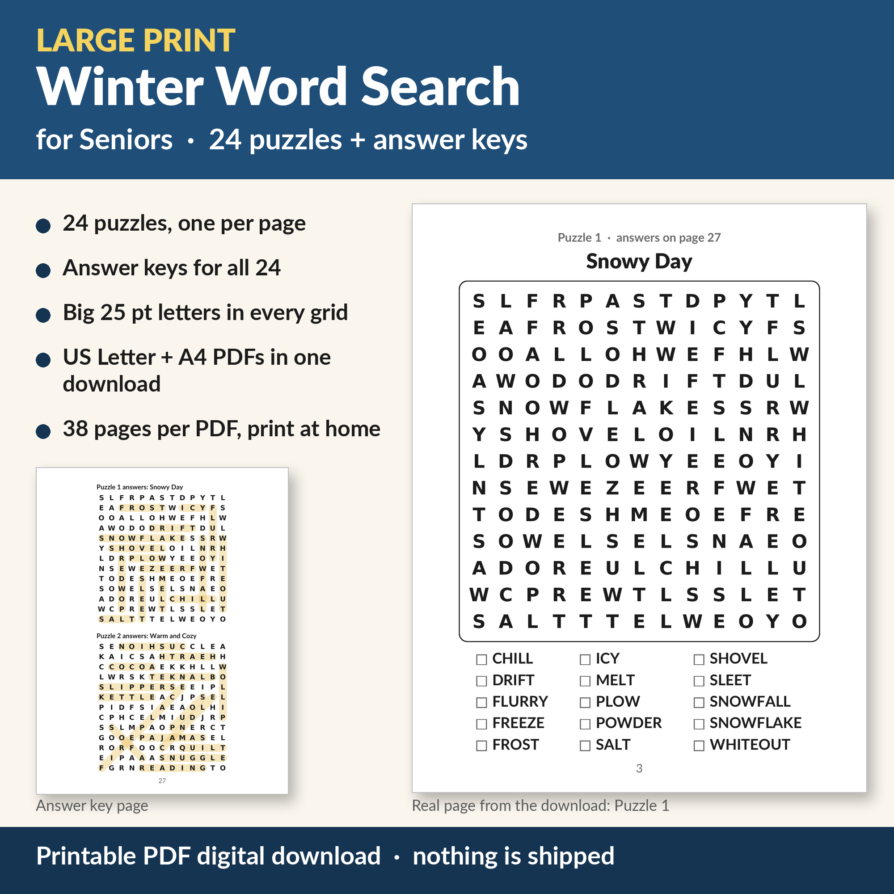

Large Print Winter Word Search for Seniors, 24 Printable Winter Puzzles with Answer Keys
24 cozy winter word search puzzles in big, bold letters that are easy on the eyes, for the long January and February afternoons. Print one for a quiet hour with a hot drink, or print a stack for a senior center or a care home activity hour.
This download is not available right now while our Etsy shop is closed. Our large-print puzzle books are printed paperbacks sold on Amazon:
Large Print Word Search, 100 Puzzles on Amazon →
Christmas Word Search, Large Print on Amazon →
What's included
- 1 ZIP file with 2 PDFs: US Letter (8.5 x 11 in) and A4. Use the one that matches your paper; the puzzles are the same in both.
- Each PDF has 38 pages: a title page, a how-to-play and printing-tips page, 24 puzzles (one per page) and 12 pages of answer keys (two per page).
- 24 winter themes, including Snowy Day, Warm and Cozy, Winter Birds, Winter Sports, Bundle Up, Hot Soups, Winter Animals and more.
- 15 words per puzzle on a 13 x 13 grid, with a tick box beside every word.
- Large print: puzzle letters are 25 point, word lists 20 point, and nothing in the file is smaller than 16 point.
- Words run across, down and diagonally; a few are spelled backwards.
- Every puzzle page tells you which page its answers are on.
- Every puzzle was checked by computer: each listed word appears in its grid exactly once, and the answer keys come from the same check.